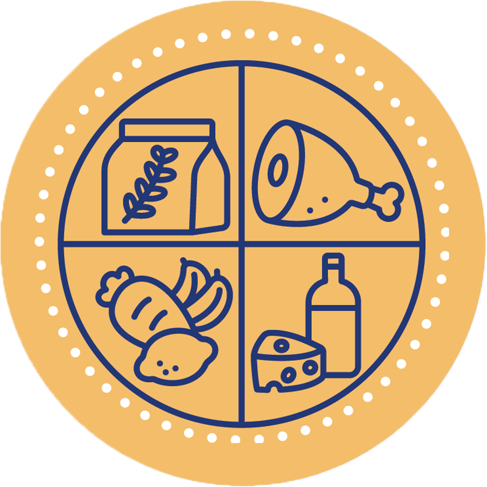
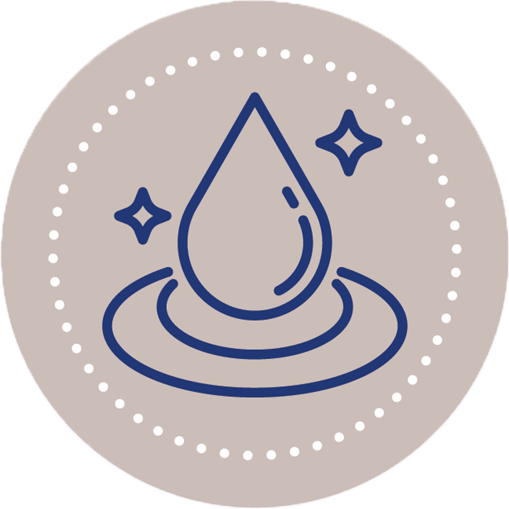
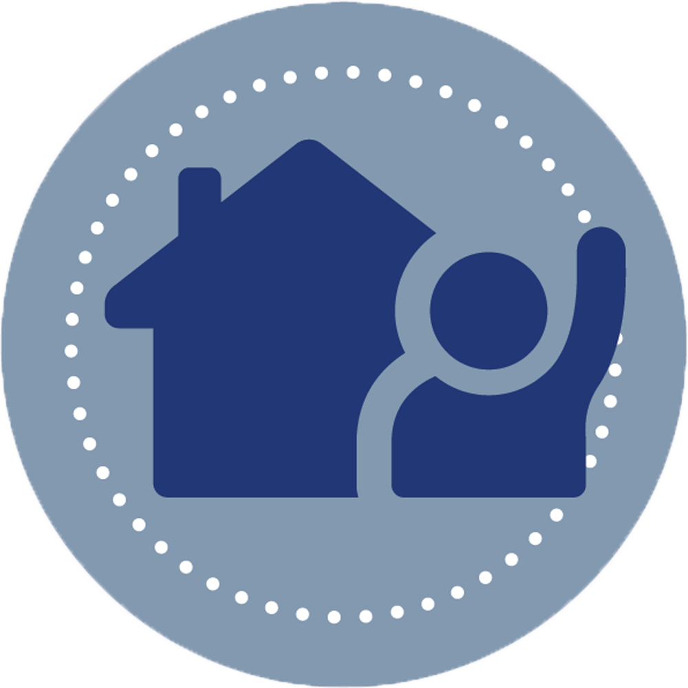

Resultados al 2024
1500
Familias con huertos familiares

245
Niños en control y recuperamiento nutricional
18
Jornadas médicas rurales
300
Mujeres con acceso a educación sexual
250
Becas otorgadas a niñas y señoritas

212
Familias con filtro para purificar agua
500
Familias con mejoras en la vivienda

1000
Familias reciben apoyo por catástrofes